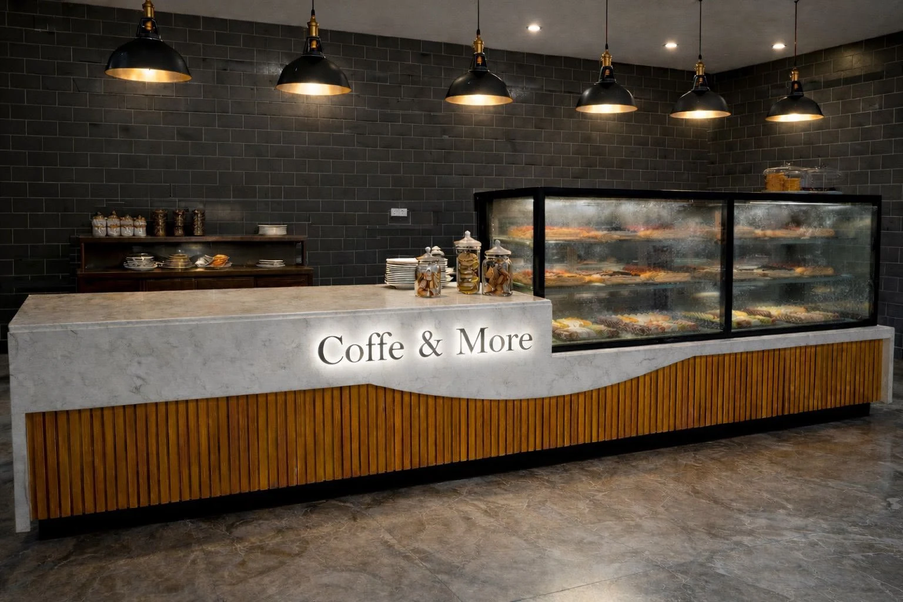

Bu tarayıcıda 3D sahne açılamadı. Projeleri menüden inceleyebilirsin.
İNTİME / SEÇİLİ PROJELER
İNTİME PROJECT STUDIO / 2026
Her parça bir araya geldiğinde,bir yerin karakteri ortaya çıkar.
BİR SONRAKİ MEKÂN
Mekân hazırlanıyor…
3D yolculuk için JavaScript'i açmalısın.